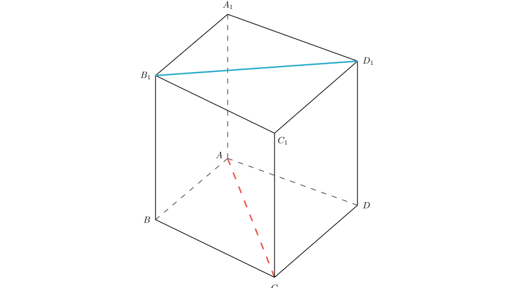
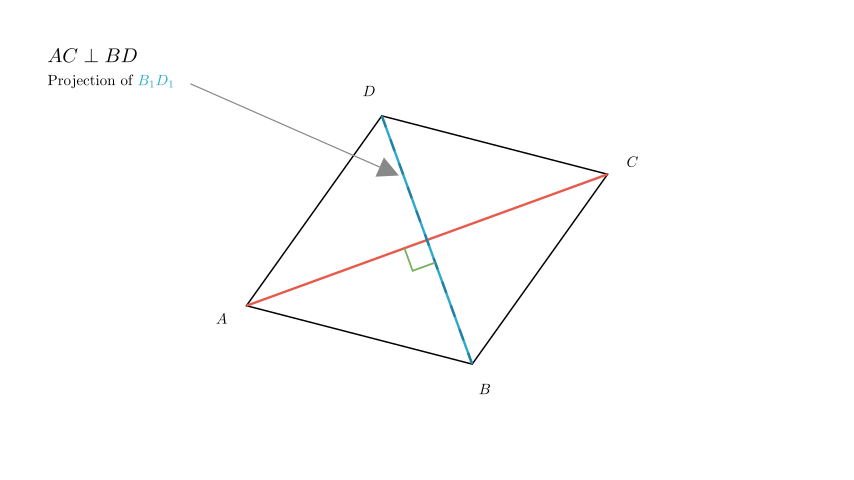

Problem Statement:
As shown in the figure, in the quadrilateral prism $ABCD-A_{1}B_{1}C_{1}D_{1}$ where the lateral edges are perpendicular to the base, when the base $ABCD$ satisfies the condition $\underline{\hspace{5em}}$, we have $AC \perp B_{1}D_{1}$. (Write down one condition you consider correct.)
Solution Approach: To solve this problem, we need to analyze the geometric relationship between the line segment $AC$ on the bottom base and the line segment $B_{1}D_{1}$ on the top base. We will use the properties of a prism and vector translation to find the equivalent condition on the base $ABCD$.

Step 1: Analyze the relationship between the top and bottom faces.
In a prism, the top base $A_{1}B_{1}C_{1}D_{1}$ is parallel and congruent to the bottom base $ABCD$. Furthermore, the lateral edges ($AA_1, BB_1$, etc.) are parallel to each other.
This implies that the line segment connecting $B_1$ and $D_1$ on the top face is parallel to the line segment connecting $B$ and $D$ on the bottom face.
Mathematically, we can express this as: $$ B_{1}D_{1} \parallel BD $$
Because $B_{1}D_{1}$ is parallel to $BD$, the angle between the skew lines $AC$ and $B_{1}D_{1}$ is the same as the angle between the intersecting lines $AC$ and $BD$ on the base plane.

Step 2: Determine the condition.
Since $B_{1}D_{1} \parallel BD$, the condition that $AC \perp B_{1}D_{1}$ is equivalent to the condition that $AC$ is perpendicular to $BD$.
$$ AC \perp B_{1}D_{1} \iff AC \perp BD $$
Therefore, for the lines $AC$ and $B_{1}D_{1}$ to be perpendicular, the diagonals of the base quadrilateral $ABCD$ must be perpendicular to each other.
Step 3: Formulate the answer.
The question asks for one condition. The most direct and general condition is:
$AC \perp BD$
Alternatively, if we want to specify a type of quadrilateral that satisfies this, we could say "ABCD is a rhombus" or "ABCD is a square," as both of these shapes have perpendicular diagonals. However, "$AC \perp BD$" is the fundamental geometric requirement.
Final Answer: The condition is $AC \perp BD$ (or $ABCD$ is a rhombus / square).
Verification: - If $AC \perp BD$: Since $BD \parallel B_1D_1$, then $AC \perp B_1D_1$. The condition holds. - The lateral edges being perpendicular to the base ensures the prism is a "right prism," keeping the top and bottom faces perfectly aligned vertically, which validates the parallel projection used above.